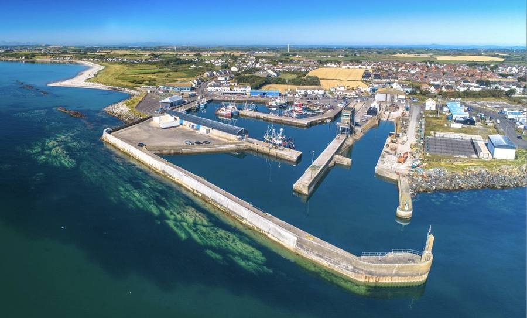
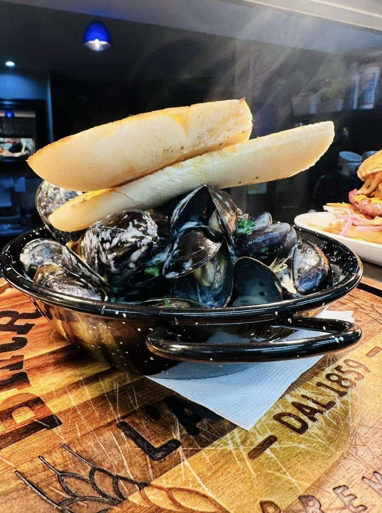
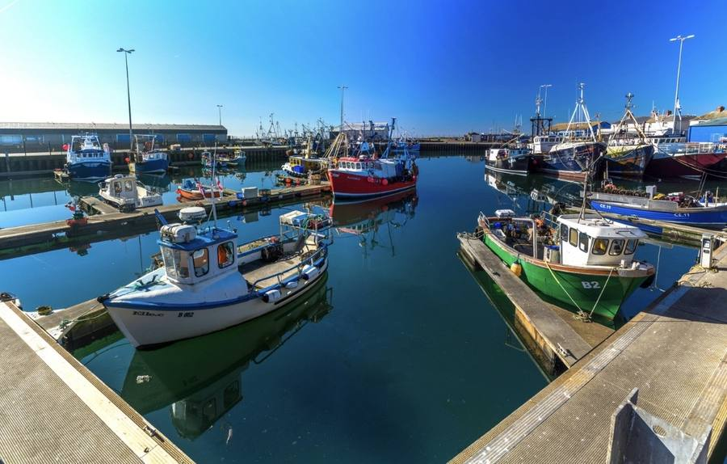
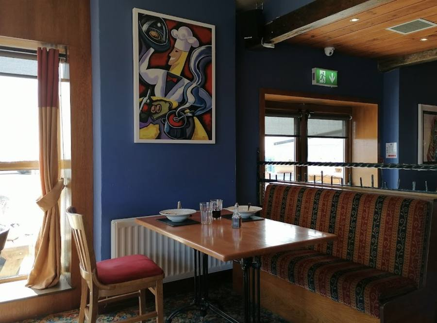
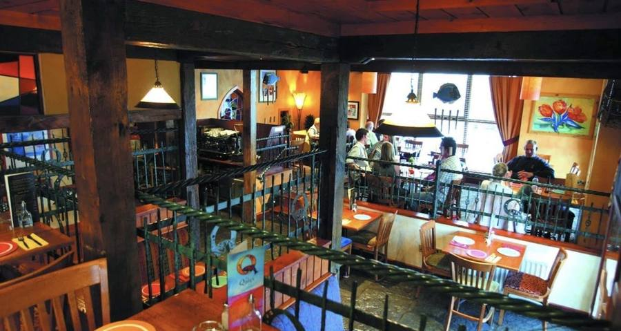
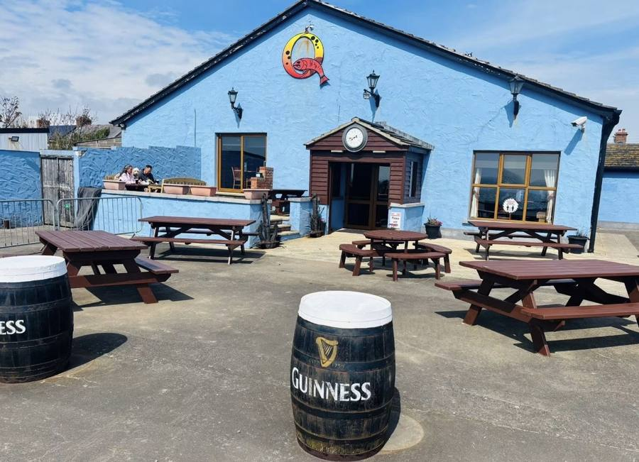
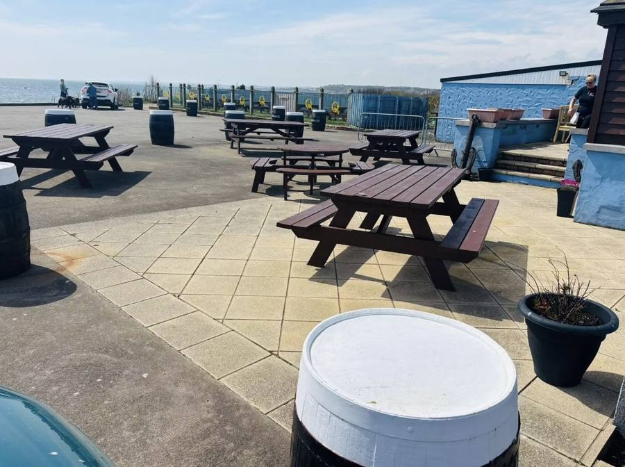
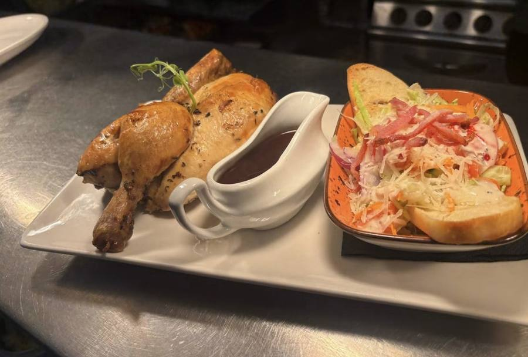
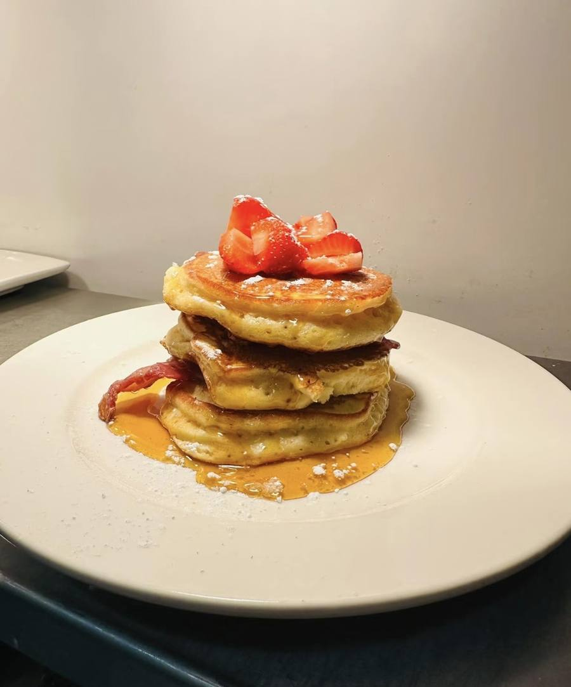
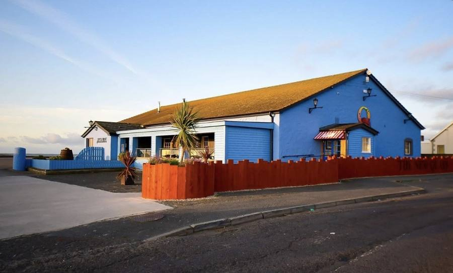

Portavogie · County Down
The New Quays
A seafood restaurant and bar on the harbour road — a hundred yards from the boats that land the catch.
The place
Ireland’s most easterly table
Portavogie is a working fishing port. Trawlers come in, the fish is auctioned on the quay, and a short walk up New Harbour Road it lands on a plate.
That short walk is the whole point of us. We are not a seafood restaurant that has fish delivered — we are a seafood restaurant in the middle of a fishing village, on the easternmost edge of Ireland, looking out at the Irish Sea.
Our story- From the harbour
- A hundred yards
- Portavogie
- The easternmost settlement in Ireland
- Recognised
- Knorr Recommended Roast 2026

The catch
Whatever came in this morning
Portavogie is best known for its prawns — the langoustine that appears on menus far beyond County Down, whole or as scampi. Alongside them come the whitefish and shellfish the local boats bring in through the season.
Because the boats decide, the board changes. Ask what came in today.
See the menu
The harbour
A working harbour, not a picture of one
Most evenings there are fish auctions on the quay. On a weekend the harbour fills with trawlers, and the seals come in with them.
The dining area
Sea on one side, harbour on the other
A split-level room with windows onto the Irish Sea, a bar, and a terrace outside for the days that allow it.




Sunday
An award-winning roast
Sunday lunch fills up. In 2026 the roast was recognised with a Knorr Recommended Roast award — a team effort, and one we’re quietly proud of.
Sundays are the busiest service of the week. If you want a table, ring ahead.
Book a table

Breakfast, brunch and bakes
Besties is our café — a separate room in the same building, open through the morning for breakfast, brunch, sandwiches, scones and traybakes.
Thursday to Saturday, 10am to 3pm. Sundays, 10am until midday.
Visit Besties
Reservations
Come to The New Quays
We take every booking over the phone. Give us a ring and we’ll find you a table.